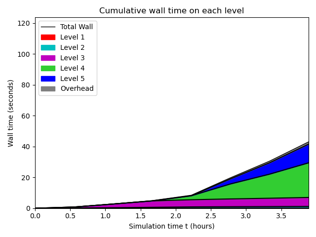
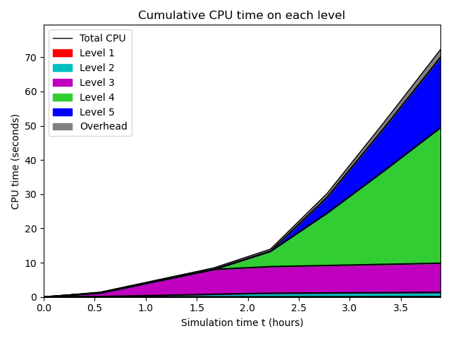
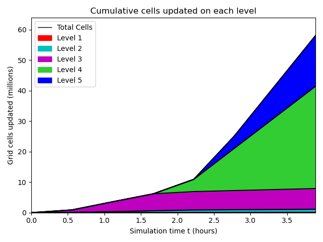
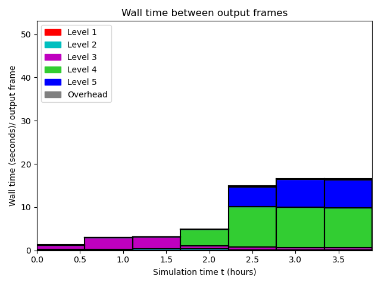
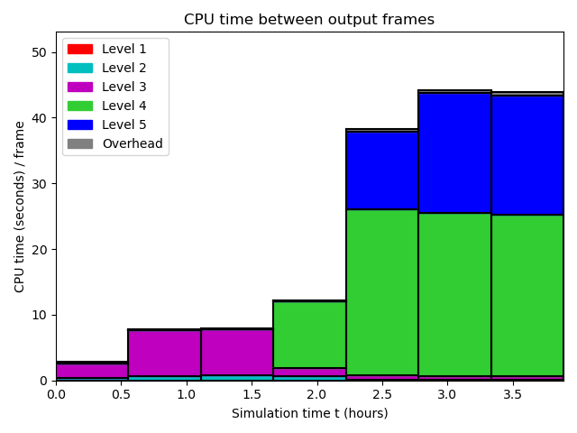
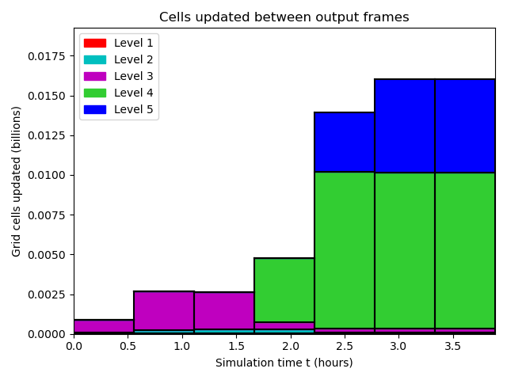
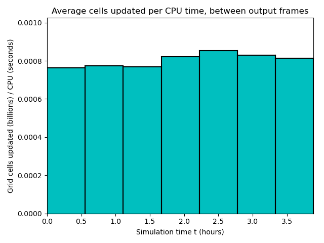

Datetime: 2022-07-26 14:29 From: /Users/rjl/clawpack_src/clawpack_master/geoclaw/examples/tsunami/radial-ocean-island-fgmax/_output
============================== Timing Data ==============================
Integration Time (stepgrid + BC + overhead)
Level Wall Time (seconds) CPU Time (seconds) Total Cell Updates
1 0.175 0.177 0.912E+05
2 1.580 2.678 0.104E+07
3 8.657 19.232 0.677E+07
4 31.753 84.703 0.336E+08
5 17.294 48.271 0.166E+08
total 59.459 155.061 0.581E+08
All levels:
stepgrid 58.856 153.738
BC/ghost cells 0.556 1.266
Regridding 0.632 1.355
Output (valout) 0.021 0.019
Total time: 60.390 156.791
Using 3 thread(s)
Note: The CPU times are summed over all threads.
Total time includes more than the subroutines listed above
Note: timings are also recorded for each output step
in the file timing.csv.
clock_rate = 1000000000 per second, count_max = 9223372036854775807
clock_start = 1658860093421581000, clock_finish = 1658860153887300000
=========================================================================
  
  
